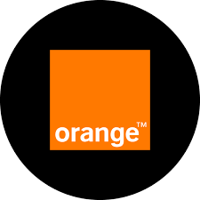

PARCOURS PROFESSIONNEL
Expériences en Cybersécurité & IT

Cyber Security Intern
Orange Business · Rabat (hybride)
- Déploiement et configuration d'un Web Application Firewall (WAF) avec ModSecurity et l'OWASP Core Rule Set (CRS) pour protéger une infrastructure web contre le Top 10 OWASP, avec un focus sur les injections SQL.
- Centralisation de l'analyse des alertes de sécurité.
Cyber Security Intern
DGSSI (Direction Générale de la Sécurité des Systèmes d'Information) · Rabat
- Conception d'une plateforme d'audit et de durcissement automatisé des systèmes Linux, basée sur les CIS Benchmarks et la DNSSI.
- Moteur de scan évaluant la conformité des configurations ; remédiations sécurisées avec sauvegarde préalable de l'état pour un rollback immédiat.
Stagiaire en développement web
IT6 Consulting · Rabat
- Application web de génération automatique de documents administratifs (HTML, CSS, JavaScript, PHP, MySQL, CRUD).
- Wireshark, VMware, Kali Linux, Packet Tracer ; maintenance du réseau local et support informatique.
Stagiaire (Observation & Archivage)
Ministère de la Justice · Maroc
- Classement, archivage et numérisation de documents ; discipline, confidentialité et ponctualité en cadre institutionnel.